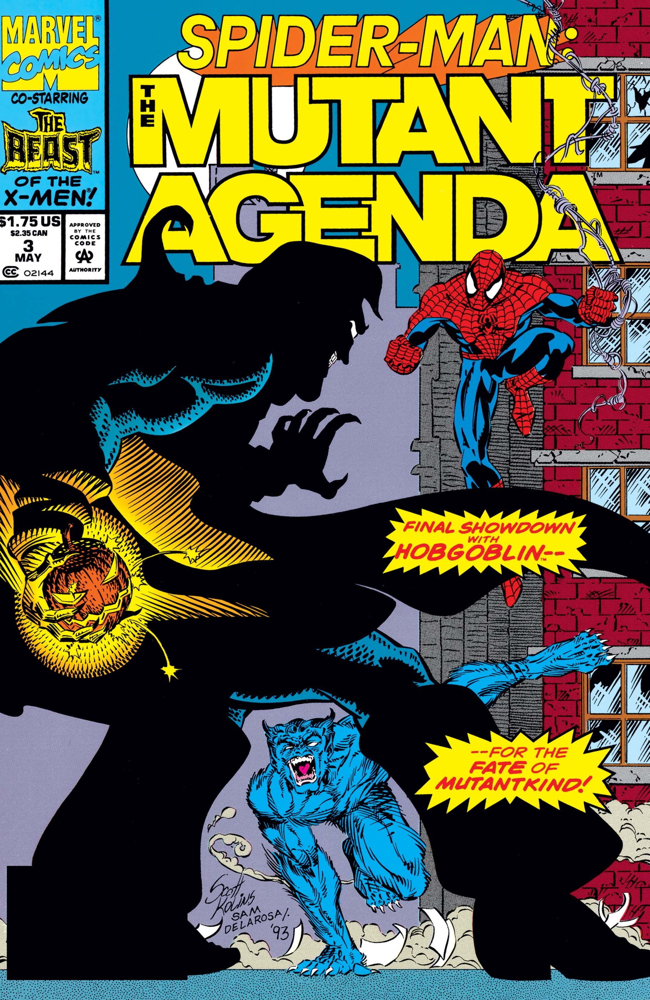
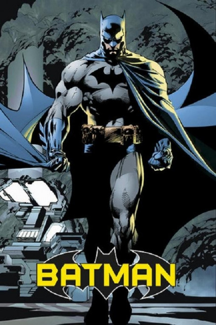
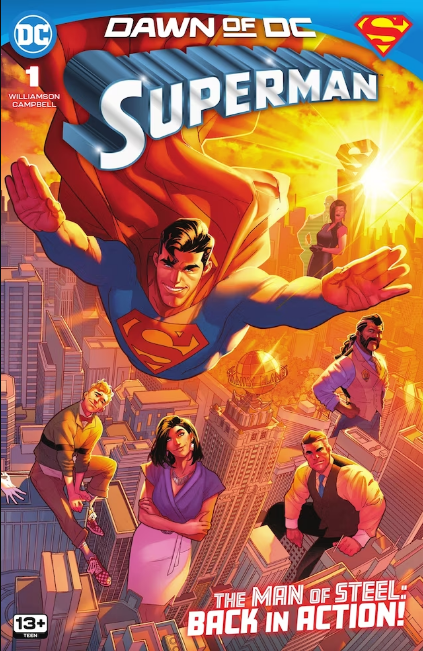

 |
Spider-Man
Es uno de los superhéroes más representativos de Marvel Comics,
creado por Stan Lee y Steve Ditko en 1962. La historia sigue a Peter Parker,
un joven estudiante que obtiene habilidades especiales tras ser mordido por
una araña radiactiva. Entre sus poderes destacan la agilidad, la fuerza y la
capacidad de trepar paredes, lo que le permite combatir el crimen en la ciudad
de Nueva York.
A lo largo de los años, Spider-Man se ha convertido en un símbolo de
responsabilidad y superación personal, siendo conocido por su lema: “Un gran
poder conlleva una gran responsabilidad”. Su popularidad ha trascendido los
cómics, apareciendo en películas, series y videojuegos, consolidándose como
uno de los personajes más influyentes de la cultura popular.
|
|  |
Batman
Batman es un superhéroe de DC Comics creado por Bob Kane y Bill Finger en 1939.
Su identidad secreta es Bruce Wayne, un multimillonario que dedica su vida a
combatir el crimen en Gotham City tras la muerte de sus padres. A diferencia de
otros héroes, Batman no posee poderes, sino que utiliza su inteligencia,
habilidades físicas y tecnología avanzada.
A lo largo de las décadas, Batman se ha convertido en uno de los personajes más
icónicos del cómic, destacando por su personalidad oscura y su lucha constante
contra villanos como el Joker. Su historia ha sido adaptada en múltiples formatos,
incluyendo cine, televisión y videojuegos.
|
|  |
Superman
Superman es un superhéroe de DC Comics creado por Jerry Siegel y Joe Shuster en 1938,
considerado el primer gran superhéroe de la historia del cómic moderno. Su identidad
secreta es Clark Kent, un periodista que trabaja en el Daily Planet, aunque en realidad
es un extraterrestre proveniente del planeta Krypton.
Tras ser enviado a la Tierra siendo un bebé antes de la destrucción de su planeta natal,
Superman desarrolla habilidades sobrehumanas gracias a la gravedad y al sol amarillo de la Tierra.
Entre sus poderes destacan la superfuerza, la velocidad, el vuelo, la visión de rayos X y la invulnerabilidad
A lo largo del tiempo, Superman se ha convertido en un símbolo de esperanza, justicia y moralidad,
enfrentándose a enemigos como Lex Luthor y protegiendo a la humanidad de múltiples amenazas.
Su historia ha sido adaptada en cómics, películas, series y videojuegos
|
 |
Iron Man
Iron Man es un superhéroe de Marvel Comics creado por Stan Lee, Larry Lieber,
Don Heck y Jack Kirby en 1963. Su identidad es Tony Stark, un brillante ingeniero
y multimillonario que construye una armadura tecnológica avanzada para salvar su
vida y posteriormente combatir el crimen. Esta armadura le otorga habilidades como
volar, lanzar rayos de energía y poseer una gran resistencia.
A lo largo del tiempo, Iron Man se ha destacado no solo por su tecnología, sino
también por su evolución personal, pasando de ser un empresario egoísta a un héroe
comprometido con la protección del mundo. Su popularidad creció aún más gracias a
su participación en el universo cinematográfico de Marvel, convirtiéndose en uno de
los personajes más reconocidos a nivel mundial.
|